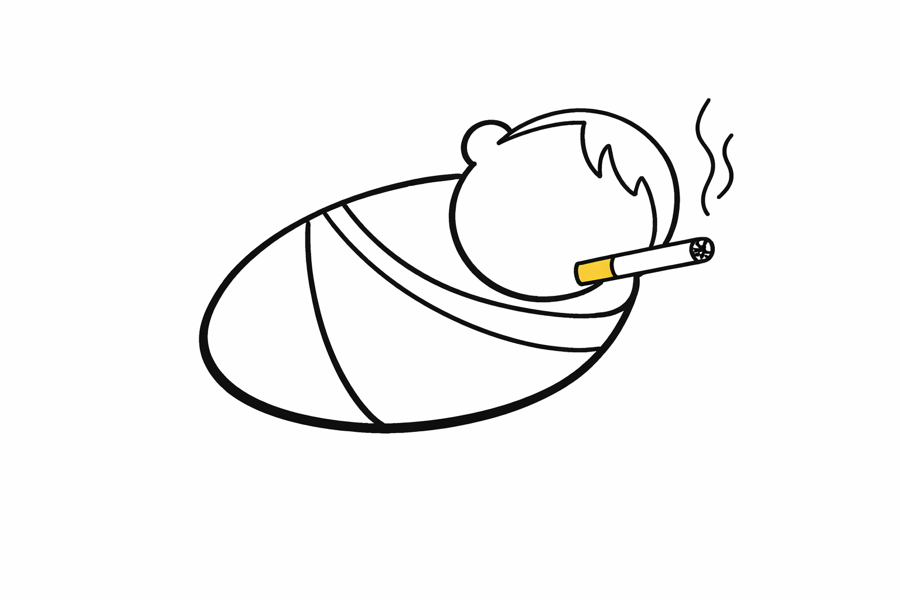

The Small Data Project
About
The Small Data Project is an initiative started in 2026 that focuses on exploring, interpreting, and analyzing information thoughtfully. Instead of chasing massive datasets, it emphasizes meaningful insights from careful observation and analysis.
Recent projects

28 March 2026
Does Smoking Reduce Infant Mortality?
Birthweight paradox, collider bias, and why the data can seem to say the opposite of what we expect.